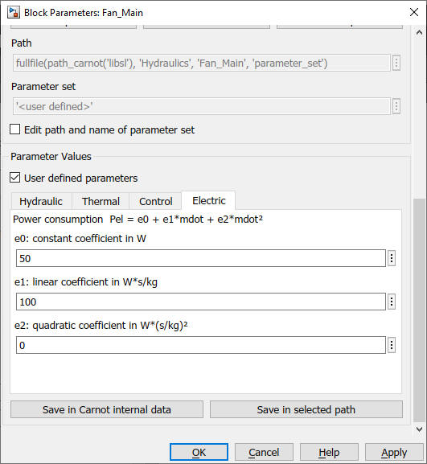

Fan_Main and Fan_Additional
Path: CARNOT/Hydraulics
Purpose:
Fan models for air ventilation systems with a defined characteristic for
the pressure drop and flow rate calculation.
Description:
Fan_Main and Fan_Additional are the pump models calculating the massflow
based on the pressure drop equation. Every circuit must have exactly ONE
Fan_Main block but it may have several Fan_Additional blocks in series
or in parallel.
See examples 'Example_Fan*.slx in the folder carnot\tutorial\examples
(or use the 'double click to load examples' button in the Carnot library).
The electric power consumption of the pump is given by a quadradic polynom:
Pel = e0 + e1*mdot + e2*mdot2
Control signal range:
Be aware that different fans react differently on the control signal
input. See Pump_Main for details.
Fluid Type and Mixture:
For the fan models the fluid type is fixed to Air. The fan models one other
major difference to the pump models: The pressure and the fluid mixture
coefficients, in case of air mainly the humidity, are taken from the incomming
THB. For a ventilation model of a house use the block
WDB2THBventilation to access the conditions
of the outdoor ambient air and to get a proper feed back to the pressure drop
calculation via the exhaust air.
Correlation of speed and flow
The correlation of volume flow, mass flow and pressure head for fans
is rather complex. In CARNOT the calculation is simplified, see
Pump_Main for details of the
massflow calculation.
Input:
| THBin | : | Thermo-Hydraulic Bus of the incomming flow |
| Ctrl | : | control signal |
Output:
| THB | : | Thermo-Hydraulic Bus of the leaving flow |
| Pdat | : | Pdat bus containing operation informations of the fan |
Parameters and Dialog Box:

Select a parameter set from the public data, the internal data
or the selected path with the buttons.
Fan_Additional and Fan_Main use the same parameter sets. They
are stored in the Fan_Main\parameter_set folder.
You may specify your own pump specifications by activating the
'user parameters' checkbox. For details see chapter
2.2.1 Choosing parameter sets for configurated models.
Examples:
Open the example explorer from the Matlab command window
ExampleBrowser
or load the examples via the CARNOT library.
Characteristics:
| Direct Feedthrough | : | Yes |
| Sample Time | : | Inherited from driving block |
| Vectorized | : | No |